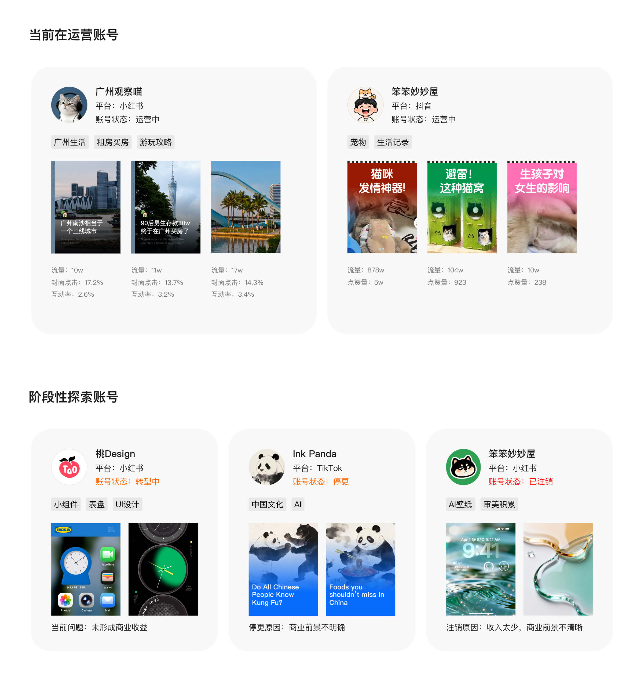
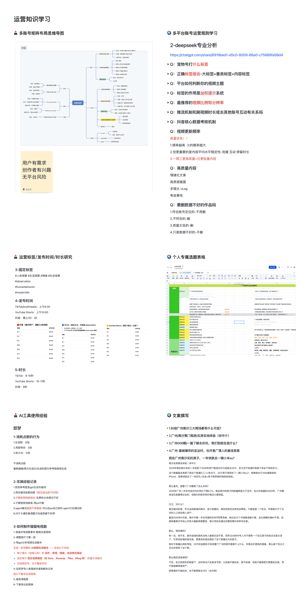

项目概览
时间与类型
时间周期：2025–2026
项目类型：自由职业探索
账号定位
在主业设计工作之外，我尝试通过多个内容账号进行跨领域的内容表达探索，涵盖城市生活、设计视觉、AI内容与创意实验等方向。
项目背景
核心目的并非单一内容创作，而是通过不同内容形态的实践，探索非设计专业语境下的表达方式与传播能力，并验证个人在内容创作与自由职业方向上的可能性。

时间周期：2025–2026
项目类型：自由职业探索
在主业设计工作之外，我尝试通过多个内容账号进行跨领域的内容表达探索，涵盖城市生活、设计视觉、AI内容与创意实验等方向。
核心目的并非单一内容创作，而是通过不同内容形态的实践，探索非设计专业语境下的表达方式与传播能力，并验证个人在内容创作与自由职业方向上的可能性。
除了内容创作本身，我也系统补充了账号运营、平台规则和数据复盘相关知识。包括多账号矩阵布局、不同平台的内容标签/发布时间/时长策略、选题表搭建。
以及通过 AI 工具辅助选题分析、文案撰写和视频脚本生成。这个过程让我从单纯关注“内容好不好看”，逐步转向关注“用户是否有需求、平台如何分发、数据如何反馈、内容如何持续迭代”。
阶段性探索账号3个：这些账号在探索过程中帮助我判断了不同内容赛道的投入产出比：部分方向因商业闭环不清晰、收入模型较弱或长期运营价值有限，已阶段性暂停或转型。通过这些尝试，我逐步收敛出更适合持续运营的方向，也形成了更清晰的内容判断和账号取舍能力。

